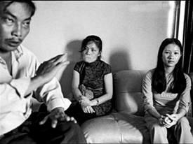

Tiền Phong - Không, giờ tôi không đơn độc, tôi còn đứa bé trong bụng. Con ạ, mẹ con mình từ nay sẽ cùng song hành trước mọi bão táp cuộc đời. Vì mẹ biết mẹ đủ tư cách để có con, nên mẹ mới làm mẹ.

Ẳnh trích từ bộ ảnh nổi tiếng của Trương Càn Kỳ (Đài Loan)
Không thể diễn đạt mọi điều ấy bằng những câu tiếng Hoa sơ sài với những dấu tay, tôi gọi điện về Việt Nam tìm người chị họ biết tiếng Hoa, nhờ chị thương lượng với chồng hộ tôi, nói cho anh ấy hiểu tôi đang nghĩ gì. Tôi hy vọng người đàn ông Đài Loan hiểu, với người phụ nữ Việt, đứa con nào cũng là máu mủ, dù trai hay gái, kể cả có đui què mẻ sứt, thì người mẹ lại càng thương yêu nó hơn, không bao giờ vứt bỏ con.
Chồng tôi nổi giận đùng đùng. Buổi chiều ông về nhà quát tháo, cô là vợ, cô đang sống ở Đài Loan, cô phải nghĩ như người Đài Loan hiểu chưa? Không người ngoài nào có quyền xía vào việc của gia đình.
Chị tôi bị mắng té tát, sợ hãi, không bao giờ dám giúp tôi nữa. Tôi đơn độc đối diện với thực tại.
Không, giờ tôi không đơn độc, tôi còn đứa bé trong bụng. Con ạ, mẹ con mình từ nay sẽ cùng song hành trước mọi bão táp cuộc đời. Vì mẹ biết mẹ đủ tư cách để có con, nên mẹ mới làm mẹ.
An Kỳ giữ chồng tôi ở nhà cô. Chắc cô ta cũng thỏa thuê khóc trên bờ vai chồng tôi.
Tôi không có bố mẹ chồng, không có anh chị em chồng. Từ ngày sang đây tôi chỉ biết có chồng và căn hộ chung cư này. Giờ đây tôi tha thiết cần tìm đồng minh. Nhưng tôi chỉ có một bà vợ cũ với ba thằng con riêng của chồng cao lớn như tây, và một tình địch đang chiếm thế thượng phong.
Những tối muộn, tôi thắp đèn rất khuya, cho tới khi khu chung cư vắng lặng chỉ còn vài ngọn đèn đường đứng soi đơn độc, đường xuống khu đỗ xe không một bóng người.
Cái thai lớn dần trong bụng. Tôi đang sống bằng tiền trong tài khoản. Trước đây, mỗi tháng Thán cho tôi hơn mười nghìn Đài tệ, để tôi gửi tiền về Việt Nam cho gia đình. Nhưng tôi vẫn giữ trong tài khoản. Ba mẹ tôi khá giả, đâu cần tiền bán con như những gia đình cô dâu Việt Nam khác.
Chồng tôi thay đổi thái độ, như chưa từng bao giờ thiện cảm với Việt Nam. Những CD bài hát tiếng Việt bị ông vứt ra khỏi xe ô tô. Thì ra tình cảm của người đàn ông xứ lạ giống một thứ đã được lập trình.
Thán muốn đứa con, Thán sử dụng phần mềm tình yêu.
Giờ đây ông muốn delete (xoá) đứa con không mong muốn ra khỏi tương lai ông. Và nếu tôi không thuận, chắc Thán sẽ vời nhiều phương cách khác. Tôi sợ ông sẽ gỡ bỏ tôi ra khỏi đời ông dễ dàng như uninstall một phần mềm.
Thán không chuyển tiền vào tài khoản tôi nữa, không đi chợ mua rau thịt về như trước. Tôi tự xoay xở với vốn tiếng Hoa bập bẹ, lo liệu cuộc sống riêng ngày một chật vật trong cái xác nhà.
Mỗi khi về, ông vào phòng riêng đóng cửa ngủ. Lúc tôi ôm lấy Thán, ông đẩy ra và mắng.
Còn một niềm an ủi, những quần áo của Thán tôi giặt sạch, là phẳng phiu cất trong tủ, Thán vẫn lấy mặc. Có lẽ giờ đây, tôi chỉ còn được ông chấp nhận như một chiếc máy giặt.
Tôi cảm nhận sâu sắc tấn bi kịch của mình, như mọi cô dâu Việt Nam khác. Có thể gặp một người chồng ghen, một người chồng bệnh tật, một gia đình khắc kỷ, một cuộc sống lạnh lẽo, hoặc một cuộc sống buông tuồng mang lại cho người vợ Việt sự tự do nhưng không mang lại hạnh phúc.
Bi kịch của chúng tôi là bởi những mục đích hôn nhân thất bại. Thán cần con, tôi cần kết hôn. Cần quá nên thế chấp đời mình vào hôn nhân. Nếu không, thì liệu còn cách giải thích nào khác? Tiền của tôi cạn dần.
Người chồng Đài Loan thường khen, cô dâu Việt Nam ân cần chu đáo và tình cảm. Chờ cơm, nấu ăn, ít đòi hỏi.
Chín mươi chín phần trăm người Đài Loan ăn ba bữa ở ngoài đường. Tất cả những gia đình vợ chồng Đài tôi quen, suốt cả năm chỉ nấu cơm vài bữa. Vì vậy, những bữa cơm chiều nóng hổi chờ chồng thường làm người Đài Loan xúc động. Trong một xã hội lạnh lùng, con người đang cần thêm nước mắt.
Họ vẫn nói, chỉ có người vợ ngoại quốc mới hỏi chồng, anh ăn gì em nấu. Còn người vợ Đài Loan chỉ nói, đã mấy giờ rồi mà chưa có gì ăn!
Vợ Việt: Anh giỏi quá, lương tháng những nghìn đô! Vợ Đài sẽ khinh bỉ, thằng bất tài tháng chỉ có nghìn đô thôi ư? Vợ Việt nói, anh dẫn em đi siêu thị chơi đi! Còn vợ Đài sẽ nói, anh đưa em đi Mỹ chơi nhé!
Vợ Việt Nam đòi, sinh nhật em thì anh tặng em bánh ga tô nhé! Vợ Đài chỉ nhắc, sinh nhật em, nhớ tặng nhẫn kim cương!
"Anh mua cho em cái xắc này nhé!" ý vợ Việt chỉ cái ví ở chợ đêm giá chỉ trăm tệ, còn bà vợ Đài hẳn đang nói về cái túi LV giá khoảng gần nghìn đô. Nếu "cái xắc" thay bằng "cái xe" tức là xe đạp - vợ Việt, ô tô đời mới - vợ Đài.
Và cuối cùng, người vợ Việt trước khi làm gì cũng hỏi ý kiến chồng, còn người vợ Đài sẽ khinh khỉnh: "Tôi làm gì cũng phải báo cáo với anh sao?"
Nhưng giờ đây, chồng tôi không cần tới sự nhu mì, ân cần, chung thuỷ của tôi, càng không cần tới tuổi trẻ nhan sắc hay học vấn của tôi nữa. Thán không cần tôi hy sinh, chờ cơm, cần kiệm nữa.
"Có lúc tôi nghĩ, hay là mình nghe lời chồng bỏ đứa bé đi. Muốn hạnh phúc thì đành phải bỏ lại mọi giá trị cá nhân, những quan điểm riêng mình, mà học lấy cách cư xử như một cô dâu mù chữ và cam chịu."
Những ngày buồn bã, tôi thường vác cái bụng bầu đi bộ ra công viên trước nhà ngồi. Tôi nhìn những chiếc máy bay trôi qua trên trời xanh. Tôi không hiểu sao trời xanh ở Đài Trung xanh và cao tới như thế, thăm thẳm, phẳng lặng. Trên toàn đảo Đài, đi từ Nam lên Bắc, chỉ có Đài Trung khí hậu tuyệt vời nhất.
Mùa đông, ngay cả những ngày rất lạnh, trời vẫn trong veo, nắng đẹp.
Không khí ấy thật tha thiết nếu có một cuộc sống lứa đôi đầm ấm, không lo âu ngày mai.
Trước đây tôi vẫn nghĩ, mình hiểu biết, chủ động đời sống, biết ăn ở, mình sẽ phải hạnh phúc hơn rất nhiều cô dâu Việt Nam khác nếu sang Đài Loan. Đó là những ý nghĩ rất ngây thơ của những người Việt thuần chất. Khi bản chất của cuộc hôn nhân chỉ là, người ta tìm kiếm những thứ người ta cần. Tình yêu, chức phận và nghĩa người chỉ là những phụ gia không đáng giá.
Có lúc tôi nghĩ, hay là mình nghe lời chồng bỏ đứa bé đi. Muốn hạnh phúc thì đành phải bỏ lại mọi giá trị cá nhân, những quan điểm riêng mình, mà học lấy cách cư xử như một cô dâu mù chữ và cam chịu. Chỉ có cách thỏa hiệp đó mới mang lại an toàn cho tôi.
Trong những lúc nghĩ ngợi lẫn lộn ấy, tôi vẫn nhìn lên trời cao, nơi những chiếc máy bay tự do bay qua. Ngửa đầu lên thì nước mắt sẽ sàng bò ngang mặt.
Tôi chưa bao giờ nghĩ đến chuyện quay về Việt Nam. Cuộc sống này tôi đã chọn thì tôi phải tự chịu trách nhiệm với đời mình. Không nói được nhiều câu tiếng Hoa, đường sá không rành, tôi chỉ biết đi đến công viên gần nhà. Không biết những người Đài Loan ra công viên chơi mỗi chiều có nhận ra tôi là một phụ nữ mang bầu bị bỏ rơi?
Bụng tôi ngày càng nặng nề, vào thời gian cái thai được hơn bảy tháng, tôi bỗng bị đau bụng. Cơn đau đáng sợ tới mức, tôi đã nghĩ tới những khả năng không hay. Tôi buộc phải gọi điện cho chồng tôi. Đó là cú điện thoại đầu tiên suốt ba tháng nay, từ lần người tình của chồng tôi nghe máy.
- Tôi không phải bác sĩ. Gọi cho tôi làm gì!
Chết điếng, trong giây lát tôi không còn cảm thấy cơn đau từ bụng, vì cơn đau từ tim đã át nó đi.
Thì ra, đứa con trong bụng cũng bướng bỉnh y như tôi, nó không chịu trở đầu, và nó đè lên tim tôi chết điếng. Những đêm tôi không trở mình nổi, bị chuột rút, đau đớn khó chịu, chồng tôi nếu về nhà cũng ôm gối ngủ phòng khác, không ngó ngàng, coi người vợ Việt như một gánh nặng không mong muốn.
Tôi lẩm bẩm và trong cơn đau cố gắng cầu xin thêm lần nữa bằng tiếng Hoa. Tôi sợ trời phật ở đây không hiểu tiếng Việt nên niệm thêm một lần bằng tiếng Hoa những cầu xin thê thảm được mẹ tròn con vuông ấy.